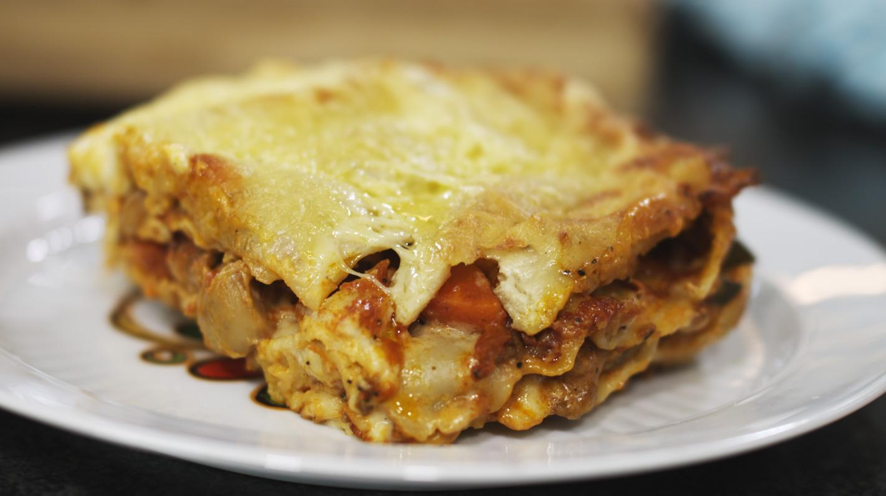

4 Kazen Lasagne

Van lasagne-recepten kunnen we er niet genoeg hebben toch? Vandaag heb ik een nieuw pareltje voor jullie, lasagne melanzane alla parmigiana.
Deze lasagne is een variatie op traditionele melanzane alla parmigiana. Dit is een laagjesgerecht met aubergine, tomatensaus, mozzarella en Parmezaan. Deze ingrediënten heb ik verwerkt in deze schotel.
Naast de tomatensaus en de lasagne bladen heb ik de schotel ook opgebouwd met repen aubergine en courgette. Plus de mozzarella, parmezaan en basilicum maakt dit een heerlijke vegetarische lasagne.
Ingrediënten
- 200 gram lasagnebladen,
- 1 ui,
- 1 teentje knoflook,
- 500 gram tomatenblokjes,
- 1 aubergine,
- 1 courgette,
- 1 bol mozarella,
- 4 eetlepels geraspte parmezaanse kaas,
- 10 blaadjes basilicum,
- 8 cherry tomaatjes,
- olijfolie,
Bereiding
- Verwarm de oven voor op 200 ºC en vet de ovenschaal in.
- Snijd of schaaf courgette en aubergine in plakken. Bak de plakken courgette en aubergine in een koekenpan met olie aan.
- Snipper de ui en pers de knoflook, fruit dit aan in een andere koekenpan met olijfolie. Voeg de tomatenblokjes toe. Roer er een eetlepel olijfolie en snuf zout door en verwarm dit nog 5 minuten.
- Snijd de mozzarella in plakken en de basilicum in stukjes.
- Verdeel 1/3 van de tomatensaus over de bodem van de schaal. Beleg dit met lasagnebladen en beleg deze met de helft van de plakken courgette en aubergine. Vervolgens nog een laagje tomatensaus , lasagne en plakken groente. Verdeel hierover het laatste deel van de saus over beleg dit met de plakken mozzarella. Verdeel hierover de gehalveerde tomaatjes en bestrooi met basilicum en Parmezaan.
- et de schotel in de oven en verwarm 30 minuten (of volg de aanwijzingen op de verpakking van de lasagnebladen). Serveer de Lasagne melanzane alla parmigiana direct uit de oven.